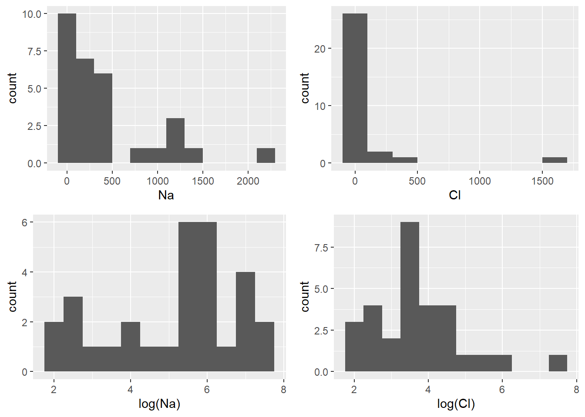
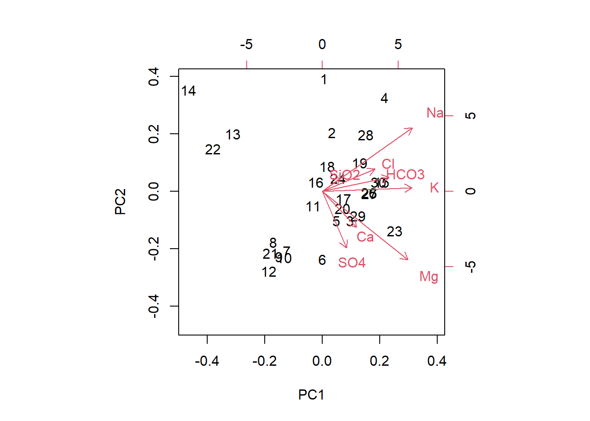
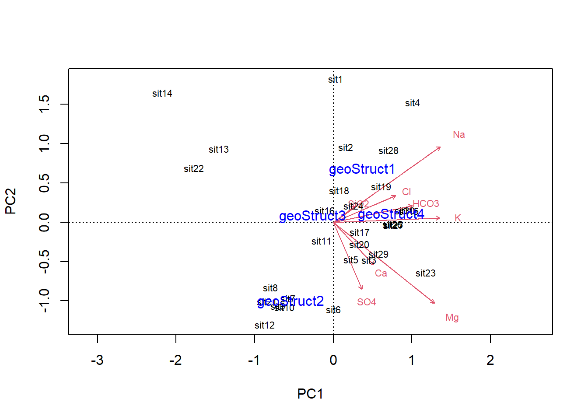
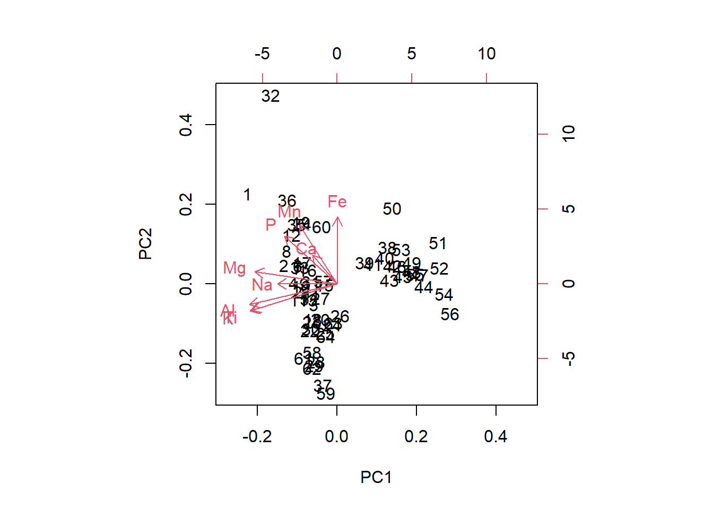
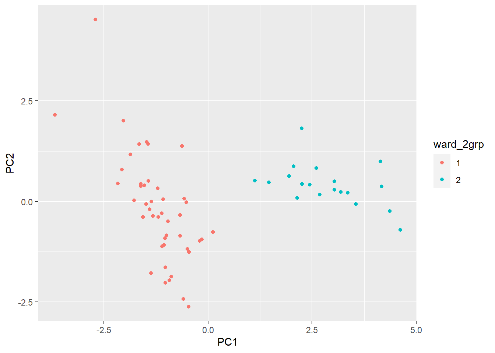
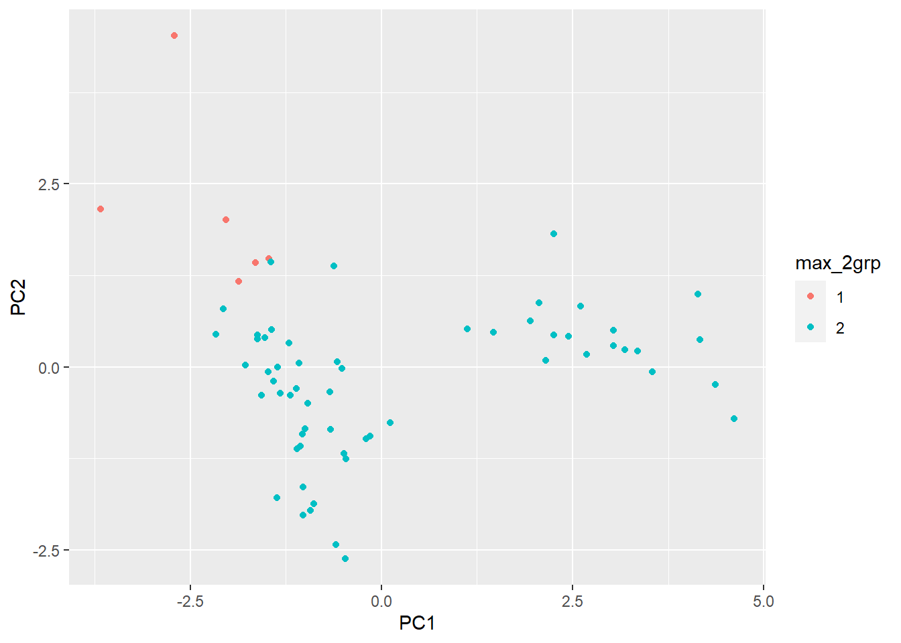
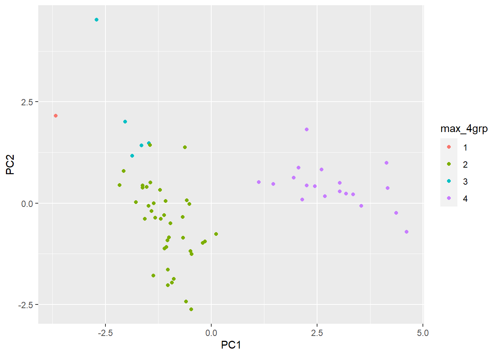
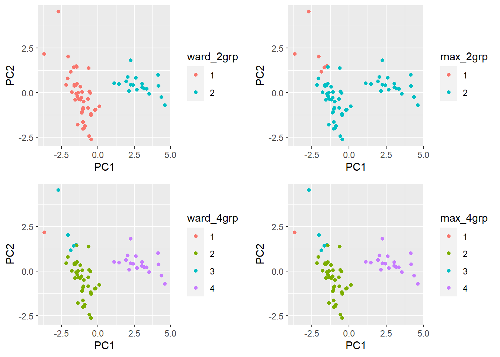
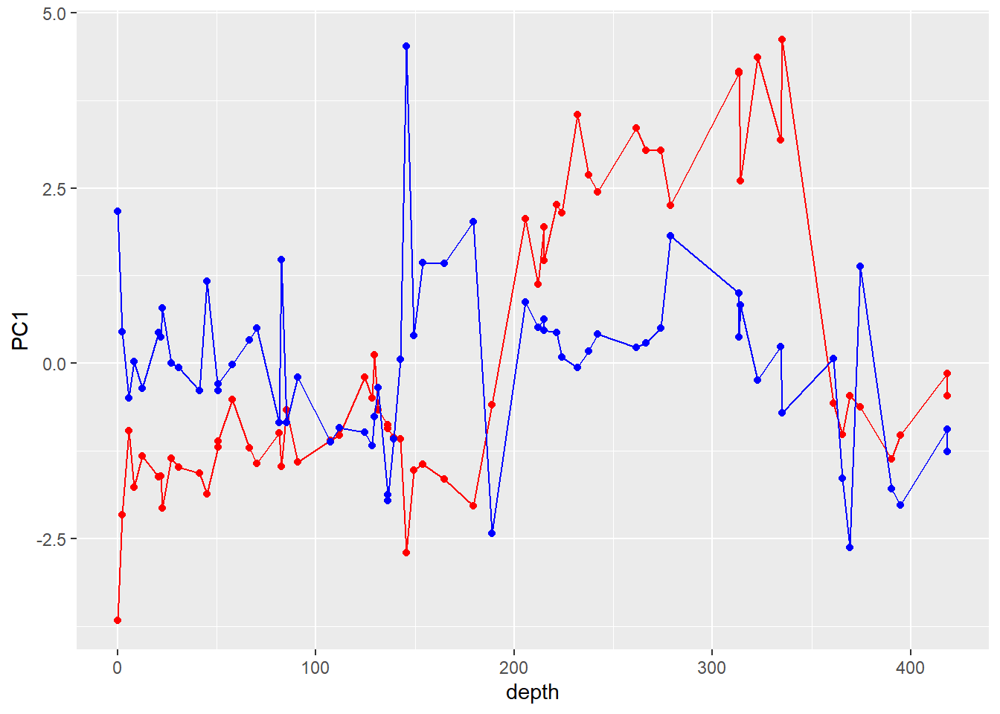

Analyses multivariées
9 décembre 2020
1. Composition de sources minérales
Le fichier springs.csv contient des données tirées d’une étude de Tanaskovic et al. (2012) sur les propriétés physico-chimiques (température, pH, conductivité électrique) et la concentration d’ions de 30 sources minérales de Serbie.
sources <- read.csv("springs.csv")
str(sources)## 'data.frame': 30 obs. of 14 variables:
## $ waterSource: chr "Kanjiza" "Junakovic" "Koviljaka" "Selters" ...
## $ tempCels : num 45 25 25 48 14.4 33 25 39.1 43 35 ...
## $ pH : num 7.7 7.3 6.6 7 7.5 7.4 7.2 7.6 7.5 7 ...
## $ elecCond : int 3770 5100 677 2219 1100 722 440 265 248 324 ...
## $ totSolid : num 4.173 6.2 0.641 2.119 1.1 ...
## $ Ca : num 5.6 24 120 60 56 60 50 62 74 102 ...
## $ Mg : num 3.8 24 36.6 18 48.8 67 61 14 17 32 ...
## $ Na : num 1157 476 200 2280 226 ...
## $ K : num 7.9 4 22.2 30 3.5 7.1 1.5 1.2 8 2.5 ...
## $ Cl : num 56.8 369 89 1560 198.8 ...
## $ SO4 : num 2 2 55 2 82 90 15 40 20 18 ...
## $ HCO3 : num 2904 829 890 3360 573 ...
## $ SiO2 : num 36.7 25 18 20 22 10 20 18 18 25 ...
## $ geoStruct : int 1 1 1 1 1 2 2 2 2 2 ...Nous nous intéressons d’abord aux 8 colonnes allant de Ca à SiO2, qui représentent dans l’ordre la concentration d’ions calcium, magnésium, potassium, chlorure, sulfate, bicarbonate et silicate, toutes mesurées en mg/L.
- Puisque ces 8 variables ont les mêmes unités, il n’est pas nécessaire de les normaliser avant d’effectuer des analyses multivariées. Toutefois, nous appliquerons une transformation logarithmique à ces données. En inspectant les données, déterminez pourquoi cette transformation est utile ici.
Note: Si un tableau de données est composé uniquement de variables numériques, vous pouvez appliquer la fonction log au tableau pour prendre le logarithme de toutes les variables d’un coup.
Réponse
Les variables de concentration prennent toujours des valeurs positives et leur distribution est asymétrique, avec des valeurs extrêmes d’un seul côté (grandes concentrations).
Par exemple, voici les histogrammes pour le Na et le Cl comparés à leur logarithme présentées soit avec la fonction hist ou avec ggplot :
Avec hist
par(mfrow=c(2,2)) #partitionne la fenetre 2 lignes et 2 colonnes pour afficher les 4 graphiques ensemble.
hist(sources$Na)
hist(sources$Cl)
hist(log(sources$Na))
hist(log(sources$Cl))
Avec ggplot
library(ggplot2)
library(cowplot) # package qui associé à ggplot permet d'améliorer la présentation des graphiques
pNa <- ggplot(sources, aes(x = Na)) + geom_histogram(binwidth = 200)
pCl <- ggplot(sources, aes(x = Cl)) + geom_histogram(binwidth = 200)
plNa <- ggplot(sources, aes(x = log(Na))) + geom_histogram(binwidth = 0.5)
plCl <- ggplot(sources, aes(x = log(Cl))) + geom_histogram(binwidth = 0.5)
plot_grid(pNa, pCl, plNa, plCl) # une fonction du package cowplot pour afficher les graphiques ensemble avec ggplot
- Réalisez une analyse en composantes principales des concentrations transformées. Que remarquez-vous au sujet des contributions des variables sur le premier axe (PC1)? Est-ce qu’il y a une propriété générale (non reliée à une variable en particulier) qui distingue les échantillons avec des valeurs négatives et positives sur cet axe?
Réponse
log_conc <- log(sources[, 6:13]) # Tableau des logarithmes des concentrations
conc_acp <- prcomp(log_conc)
biplot(conc_acp)
Les 8 variables ont un effet positif sur PC1. Ainsi, PC1 distingue les sources avec une grande concentration totale d’ions minéraux (valeurs positives) de celles avec peu d’ions minéraux (valeurs négatives).
- Réalisez un diagramme de double projection (biplot) pour les composantes principales 2 et 3. Quelles variables ont le plus grand effet sur chacun de ces axes? D’après ce diagramme, donnez un exemple de paire d’ions dont les concentrations sont fortement corrélées positivement, et d’une autre paire dont les concentrations sont négativement corrélées.
Réponse
biplot(conc_acp, choices = c(2, 3))
La composante PC2 est surtout affectée par les ions Mg, Ca et SO4 (négativement) et par Na (positivement). SO4 a un effet négatif important sur PC3, avec des effets moindres de Na (négatif), Ca et Mg (positifs).
Les concentrations de Ca et Mg sont corrélées positivement (flèches dans la même direction), même chose pour Na et Cl. La corrélation entre Mg ou Ca d’une part, et Na ou Cl d’autre part est négative car les flèches pointent dans des directions opposées. On pourrait aussi dire que SO4 et HCO3 sont négativement corrélés.
- La variable
geoStructdu tableau de données original est une variable catégorielle représentant le type géologique du site. Comment pourriez-vous vérifier si une composante principale varie significativement entre les sites de différents types géologiques? Réalisez ce test séparément pour les composantes PC1 et PC2 et déterminez la nature des différences significatives s’il y a lieu.
Réponse
Option 1: ANOVA pour PC1 et PC2 séparément
D’abord, nous ajoutons les deux premières composantes au tableau de données original et convertissons geoStruct en facteur.
sources <- cbind(sources, conc_acp$x[, 1:2])
sources$geoStruct <- as.factor(sources$geoStruct)Nous pouvons réaliser une ANOVA avec PC1 ou PC2 comme réponse.
aov_PC1 <- aov(PC1 ~ geoStruct, sources)
summary(aov_PC1)## Df Sum Sq Mean Sq F value Pr(>F)
## geoStruct 3 66.09 22.030 3.824 0.0215 *
## Residuals 26 149.78 5.761
## ---
## Signif. codes: 0 '***' 0.001 '**' 0.01 '*' 0.05 '.' 0.1 ' ' 1aov_PC2 <- aov(PC2 ~ geoStruct, sources)
summary(aov_PC2)## Df Sum Sq Mean Sq F value Pr(>F)
## geoStruct 3 33.13 11.042 4.791 0.00868 **
## Residuals 26 59.92 2.305
## ---
## Signif. codes: 0 '***' 0.001 '**' 0.01 '*' 0.05 '.' 0.1 ' ' 1Nous utilisons finalement le test de Tukey pour déterminer entre quels groupes il y a une différence significative (avec \(\alpha = 0.05\)).
TukeyHSD(aov_PC1)## Tukey multiple comparisons of means
## 95% family-wise confidence level
##
## Fit: aov(formula = PC1 ~ geoStruct, data = sources)
##
## $geoStruct
## diff lwr upr p adj
## 2-1 -2.9321262 -7.096491177 1.232239 0.2399046
## 3-1 -2.0340041 -5.464418350 1.396410 0.3818629
## 4-1 1.1857497 -2.801326174 5.172826 0.8464238
## 3-2 0.8981221 -2.532292130 4.328536 0.8889405
## 4-2 4.1178759 0.130800046 8.104952 0.0410571
## 4-3 3.2197538 0.006876504 6.432631 0.0493670TukeyHSD(aov_PC2)## Tukey multiple comparisons of means
## 95% family-wise confidence level
##
## Fit: aov(formula = PC2 ~ geoStruct, data = sources)
##
## $geoStruct
## diff lwr upr p adj
## 2-1 -3.53591092 -6.1697988 -0.9020231 0.0055074
## 3-1 -1.25304765 -3.4227245 0.9166292 0.4046265
## 4-1 -1.20851299 -3.7302686 1.3132426 0.5621738
## 3-2 2.28286328 0.1131864 4.4525402 0.0364862
## 4-2 2.32739793 -0.1943577 4.8491536 0.0781915
## 4-3 0.04453465 -1.9875539 2.0766232 0.9999198D’après ces résultats, le type 4 a une valeur de PC1 plus grande que 2 et 3, tandis que le type 2 a une valeur de PC2 plus petite que 1 et 4 (car la différence 2-1 est négative et 4-2 est positive).
Option 2: Avec envfit
La fonction envfit du package vegan permet de tester si geoStruct a un effet significatif sur les deux premières composantes de l’ordination (au lieu de les tester séparément avec l’ANOVA). Dans ce cas, il faut refaire l’ACP avec la fonction rda du package vegan pour pouvoir utiliser envfit:
library(vegan)
library(dplyr)
conc_acp2 <- rda(log_conc)
conc_envf <- envfit(conc_acp2, select(sources, geoStruct))
conc_envf##
## ***FACTORS:
##
## Centroids:
## PC1 PC2
## geoStruct1 0.3743 0.6723
## geoStruct2 -0.5397 -1.0067
## geoStruct3 -0.2598 0.0773
## geoStruct4 0.7440 0.0984
##
## Goodness of fit:
## r2 Pr(>r)
## geoStruct 0.3311 0.002 **
## ---
## Signif. codes: 0 '***' 0.001 '**' 0.01 '*' 0.05 '.' 0.1 ' ' 1
## Permutation: free
## Number of permutations: 999biplot(conc_acp2)
plot(conc_envf)
Le résultat est conforme à celui obtenu par l’autre méthode: le type 4 a une valeur de PC1 plus grande que 2 et 3, tandis que le type 2 a une valeur de PC2 plus petite que 1 et 4. (Il y aurait un équivalent du test de Tukey pour les données multivariées, mais nous ne le voyons pas dans ce cours.)
- Créez un nuage de points des composantes PC1 et PC2 qui indique aussi le type géologique pour chaque site.
Réponse
ggplot(sources, aes(x = PC1, y = PC2, color = geoStruct)) +
geom_point()
2. Composition de sédiments arctiques
Le fichier arctic.csv, tiré d’une étude de Martinez et al. (2009), contient des données sur la composition d’échantillons provenant de différentes profondeurs (depth, unités non-spécifiées) d’une carotte de sédiments de l’océan Arctique. Pour chaque échantillon, les colonnes Al à P indiquent le pourcentage de la masse de l’échantillon correspondant à cet élément.
arctic <- read.csv("arctic.csv")
head(arctic)## sampleID depth Al Ti Fe Mn Ca Mg Na K P
## 1 4C-01H-1W 0.20 8.34 0.520 5.34 0.286 4.04 1.71 1.86 2.15 0.085
## 2 4C-01H-2W 2.36 7.56 0.539 5.75 0.307 0.50 1.48 1.85 2.07 0.084
## 3 4C-02H-2W 5.62 7.84 0.468 4.67 0.149 0.46 1.13 1.70 1.90 0.075
## 4 3A-01H-4W 8.52 8.58 0.503 5.06 0.288 0.50 1.17 1.85 2.08 0.093
## 5 4C-03H-3W 12.41 7.46 0.494 5.06 0.089 0.42 1.15 1.84 2.10 0.093
## 6 2A-05X-2W 20.83 8.49 0.520 6.21 0.097 0.40 1.13 1.74 1.99 0.127- Encore une fois, puisque les variables sont sur la même échelle (% de masse), il n’est pas nécessaire de les normaliser. Réalisez une ACP avec les variables originales et une autre avec les variables normalisées, puis comparez les diagrammes de double projection. Expliquez comment le choix de normaliser ou non affecte l’importance de différents éléments sur les résultats de l’ACP.
Réponse
comp <- arctic[, -(1:2)] # seulement les variables de composition
comp_norm <- scale(comp)
comp_acp <- prcomp(comp)
comp_norm_acp <- prcomp(comp_norm)
biplot(comp_acp)
biplot(comp_norm_acp)
Dans la version non-normalisée, les deux éléments les plus prévalents (Al et Fe) dominent l’ordination. La normalisation donne donc plus d’importance aux éléments plus rares. Si les variables ont toutes les mêmes unités, la normalisation est optionnelle et dépend de notre objectif. Si on a des elements rares qu’on veut aussi mettre en évidence dans l’analyse, il est bien de normaliser.
- À partir des variables normalisées, créez une classification hiérarchique à partir de la méthode du saut maximum et une autre à partir de la méthode de Ward. Superposez la classification en (i) 2 groupes et (ii) 4 groupes obtenue par chaque méthode aux résultats de l’ACP pour ces mêmes données. Est-ce que les groupes obtenus différent entre les deux méthodes? Est-ce que ces classifications semblent bonnes par rapport aux coordonnées de l’ACP?
Note: Pour la classification en quatre groupes, regardez jusqu’à 4 composantes principales pour juger la classification. (Ce n’est pas une règle générale, seulement une suggestion pour ce problème.)
Réponse
On réalise d’abord les deux regroupements, puis on extrait une classification en 2 et 4 groupes.
comp_dist <- dist(comp_norm)
cl_ward <- hclust(comp_dist, method = "ward.D2")
cl_max <- hclust(comp_dist, method = "complete") # saut maximum
# Extraire les groupes et placer dans le tableau de données principal
arctic$ward_2grp <- as.factor(cutree(cl_ward, k = 2))
arctic$ward_4grp <- as.factor(cutree(cl_ward, k = 4))
arctic$max_2grp <- as.factor(cutree(cl_max, k = 2))
arctic$max_4grp <- as.factor(cutree(cl_max, k = 4))
# Placer les composantes principales dans le même tableau
arctic <- cbind(arctic, comp_norm_acp$x)Les classifications en 2 groupes diffèrent et celle avec la méthode de Ward permet de mieux diviser les données selon les deux premiers axes.
ggplot(arctic, aes(x = PC1, y = PC2, color = ward_2grp)) +
geom_point()
ggplot(arctic, aes(x = PC1, y = PC2, color = max_2grp)) +
geom_point()
La classification en 4 groupes est la même pour les deux méthodes.
ggplot(arctic, aes(x = PC1, y = PC2, color = ward_4grp)) +
geom_point()
ggplot(arctic, aes(x = PC1, y = PC2, color = max_4grp)) +
geom_point()
La séparation entre les groupes 2 et 3 est surtout visible sur l’axe PC4.
ggplot(arctic, aes(x = PC1, y = PC4, color = ward_4grp)) +
geom_point()
Autre option de presention si on veut en seul graphique:
w2 <- ggplot(arctic, aes(x= PC1, y=PC2, color=ward_2grp)) + geom_point()
max2 <- ggplot(arctic, aes(x= PC1, y=PC2, color=max_2grp)) + geom_point()
w4 <- ggplot(arctic, aes(x= PC1, y=PC2, color=ward_4grp)) + geom_point()
max4 <- ggplot(arctic, aes(x= PC1, y=PC2, color=max_4grp)) + geom_point()
plot_grid(w2, max2,w4 ,max4)
- Représentez graphiquement la variation des deux premières composantes principales en fonction de la profondeur (
depth), puis l’appartenance aux groupes de la classification à 4 groupes (selon l’une ou l’autre méthode) en fonction de la profondeur. Est-ce que ces deux méthodes permettent de détecter des changements importants de composition du sédiment le long de la carotte?
Réponse
Variation des deux premières composantes principales en fonction de la profondeur (depth).
ggplot(arctic, aes(x = depth)) +
geom_point(aes(y = PC1), color = "red") +
geom_line(aes(y = PC1), color = "red") +
geom_point(aes(y = PC2), color = "blue") +
geom_line(aes(y = PC2), color = "blue")
La première composante principale (PC1) indique un changement de composition plus marqué que PC2, en comparant les profondeurs entre 200 et 350 (environ) comparé au reste du profil.
Note: On aurait aussi pu utiliser envfit et ordisurf avec le package vegan.
# Refaire l'ACP avec la fonction rda
comp_acp2 <- rda(comp_norm)
comp_envf <- envfit(comp_acp2, arctic$depth)
# Ordisurf est préférable pour représenter une relation non-linéaire entre la variable et les deux premiers axes PC1 et PC2
ords <- ordisurf(comp_acp2, arctic$depth)
# superposer le graphique d'ordisurf (doit être en premier) et envfit
plot(ords)
plot(comp_envf)
Les lignes de contour n’étant pas parallèles et également espacées, l’effet de la profondeur ne semble pas être vraiment linéaire sur les axes PC1 et PC2. C’est aussi ce que montraient nos graphiques plus haut.
Classification en 4 groupes (Ward) selon la profondeur.
ggplot(arctic, aes(x = depth, y = ward_4grp)) +
geom_point()
La première composante principale (PC1) ainsi que la classification indiquent toutes deux un changement de composition pour une profondeur entre 200 et 350 (environ) comparé au reste du profil. Les deux composantes principales et la classification montrent que l’échantillon le moins profond se démarque aussi des autres.